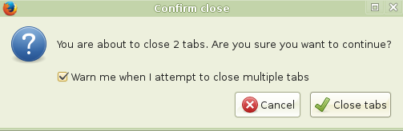
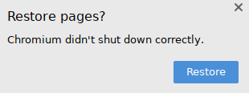
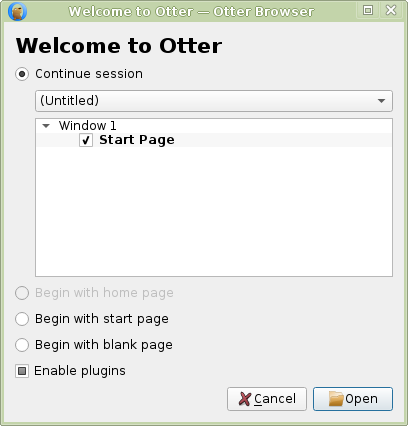
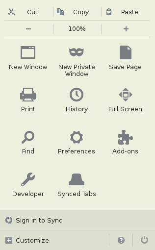
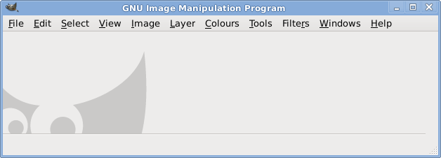

We encounter them everyday, but have learned to ignore or tolerate them - yet they keep popping up like moles, claiming our favorite software. Sometimes we do not know how exactly to describe the flaws - just intuitively realize that something is wrong here. In this article I will try to more methodically point out the numerous bad design decisions, the popular offenders as well as programs who have managed to avoid them.
My most hated design issue, and probably the most common one. Here you're trying to work...and then boom! A dialog box, overlay, notification - call it anything you want - it steals your attention, ruins your focus, and sends you into rage. A popular example is Mozilla Firefox (will be my favorite target here ^_^). Of course it "greets" you with the 'Firefox will send some data' bullshit when you open the new tab, but we will skip that. What happens when you try to type something into the address bar?
This shows up. Of course we can see the manipulation in improve your experience, but that isn't the point here. This stuff should be in the settings, and the default should be NO. I mean, that's what the settings menus are for - right? I don't want to be bothered while searching - just let me search! How about when you close the browser with multiple tabs open?

No explanation should be required...I've clicked the X button, of course I want to close the damn tabs. What did the guys who came up with this think? That people don't know what the X button does, maybe? Don't make me laugh - everyone, from a 3 to 103 year old, has used a computer before these days. Or maybe that you've got to make sure that, despite scrolling all the way to the X button, they really wanted to close the damn browser - thus treating everyone like goldfish or the mentally disabled? This, again, could be dumped to the settings menu - and the default should be DON'T BOTHER ME.
Another, and worse, example is Chromium. Anytime it 'does not close correctly' it displays this upon startup:
.
And this crap will stay there and take up space until you close it or choose to restore pages. Could they really not simply have a small button, (right where the extensions are for example - that way everyone will notice) that would restore the sites if anyone wanted? Right now, it fucking takes up 1/4 of the screen horizontally until you react to it. Could there be a more terrible design decision?
You'd think the niche browsers have come up with a smarter way, but no dice. Otter Browser, for example, throws up a whole separate window

to let you choose how you want to start your session. And you can't do a thing until you deal with it.
Smaller offenders are qBittorrent, which will remind you that you are responsible for the stuff you share, or something like that. Probably any image or text editing program, which have the annoying "do you want to save before closing" message (no, if I clicked the button, I want to close - that's it! If you are so worried about people accidentally losing their work, include an autosave feature - but don't bother me with popups!).
So which programs do it right? Well, media players, PDF viewers - just because there's nothing to pop out there. NetSurf browser didn't show anything when I improperly closed it and just displayed its start page - the correct behavior - though it should also have an option somewhere to restore the tabs (that doesn't get in the way of course). The gold standard is to have the functionality without the annoyance.
I mean, why would you assume everyone has an internet connection at all times? You know, people can take their laptop with them to a place without WiFi. Or their ISP could simply be down for a while. Or there is a power outage and they're running on battery. Or they moved and have no internet in the new house yet. Regardless of those reasons, help should still be available offline - if there is no point in connecting to the internet - maybe don't make the connection. It's easier to mention software that does not violate this principle - SpaceFM, Claws Mail and Geany are all I've found so far.
This should be inexcusable in the modern age, and yet has eluded the vast majority of software. You might have some basic keybindings there by default (for some actions only - those the devs thought you'd need, the rest can go to hell), but you can't change them - or worse - you are not even told what they are (Firefox and Chrome are examples of the latter). Why should we be at the mercy of the devs? We should be able to control our software the way we want to. Geany has a nice "Keybindings" section in Preferences - why can't others follow? SpaceFM does it even better - you can set a shortcut for every single clickable item. This is the gold standard - but for now we could settle for Geany-style Keybindings menu.
File, View, Edit, Tools, Help...sound familiar? Apparently not to some "modern" programs that thought they can do better. As usual, both Chrome and Firefox are the main offenders here. Chrome's menu consists of one button which contains the settings the devs thought are the most important - while the rest goes into a separate "Settings" menu where everything is crammed together again. Firefox does even worse - the menu is a just a few big buttons.

Cutting, saving, zooming - which would traditionally be in a separate menu - are instead crammed together.
Of course, to achieve this, both of these browsers had to massively cut down the amount of available settings (see above picture) - the rest are dumped into about:config or into the abyss. For a non-browser example - GNOME 3 also apparently suffers from this issue (which has spawned the MATE desktop environment) - but I don't know much about it. What is wrong with the traditional "desktop metaphor" interface? That's what the devs should think about before coming up with their "improvements". Fortunately, the vast majority of software still has the sane UI.
When you install a program, you expect certain things to be there by default - but recently, many devs have been shying away from that model. Of course our "favorites" Chrome and Firefox lead the pack - with every new version, more and more stuff is removed and you're forced to traverse their admittedly massive extension stores to add it back. So much that the first thing anyone has to do after installing the browser is adding a bunch of extensions to it. Content blockers, style editors, keybinders, proxy switchers...all things that should be there by default. Is that really the direction we want to go in? Now that does not mean extensions are bad in general - but they need to extend the software, not replace it. Who does it right? SpaceFM for example - all the basics (and more!) you'd expect from a file manager are there, and anyone can submit and share a plugin with a custom command. SpaceFM hit the jackpot again - why can't others follow?
You start a program and expect to be able to work right away. But not all of them allow that. In fact, for some there is quite a long path before you can use it, and it's not always obvious. Let's check out what appears when we start the GNU Image Manipulation Program:

A whole lot of nothing
Okay, let's make a new file. Great! Now to start drawing...wait, where is my paintbrush? It's hiding in the Tools section of course. Wait, I made a mistake - gotta erase it! So let's find the eraser...there it is. Now the paintbrush again...screw it, that's so inconvenient. Why can't I have all the tools displayed on the sidebar? Oh wait...Windows > New Toolbox allows just that, but why wasn't it there by default? And how could I have known it's in Windows and not Tools? It's so unintuitive. Okay, let's pencil something in and our drawing is finished. Hmm, that's quite large for a pencil...I want to reduce the size. Of course, an option to do that should have appeared the second I chose the pencil...but it's not there. Where is it hiding? In Windows > Dockable Dialogs > Tool Options. Try to guess that! Inkscape does it right - what's GIMP's excuse? I've focused on it here but this can apply to any software - even Linux distros that require installing too many additional packages to be usable. Or a media player that needs screwing around with codecs, etc.
Recently my Linux system threw up an error about an .Xclients
file, so naturally I went to DuckDuckGo to check what's up. And what do I see? Including results for .clients.
Fuck off - I typed .Xclients
, because that was exactly what I wanted to search for! Spellcheck is another "feature" that fits into this category - if I misspell something, that's on me - I can always check a dictionary if I'm unsure. What I don't want is an obnoxious strikethrough - or worse, an automatic modification - which, ironically, often ends up being wrong (many horror stories of forum posts having their meanings changed completely thanks to spellcheck). Maybe these things would not be so bad if they were not the defaults - but unfortunately, they usually are.
Let's play a game! Guess what's the main purpose of this program? It's an e-mail client! But can we really say that if it has all that other "functionality" tacked on? I suggest to call it an abomination instead. Anyway, there are several reasons why a program shouldn't try to do more than one job - it clutters the UI, increases loading time, makes bugs and security issues more likely, and just confuses and distracts the users. Efficiency is also decreased when your mail client is trying to do the job of a chat program, since it won't do it as well and you will need a proper one anyway. But perhaps more importantly, we already have a better way of doing what the abominations are doing - it's called a window manager. Yes, this is the thing which allows you to start any program you want and switch between them at will. Need to edit some text? Launch Leafpad. Type some commands? Click the xterm icon. Send an instant message? Pidgin is there for you. Putting more than one type of functionality in a program is pointlessly duplicating the job of the window manager. It's like throwing your food, clothes and electronics in the same container, instead of neatly separating them. Now, this has nothing whatsoever to do with the recent mistaken trend of "minimalism" - where you intentionally have your program do as little as possible. Having features is fine as long as they are all relevant to the task at hand - so a mail client can have all the functionality needed for mail handling - but should avoid intruding on the territory of web browsers or chat programs, like Thunderbird does. Other examples of software suffering from this issue include: systemd, SeaMonkey, FrostWire / Tixati, VLC (videos and music should be separate!), and many others.
Back to the front page